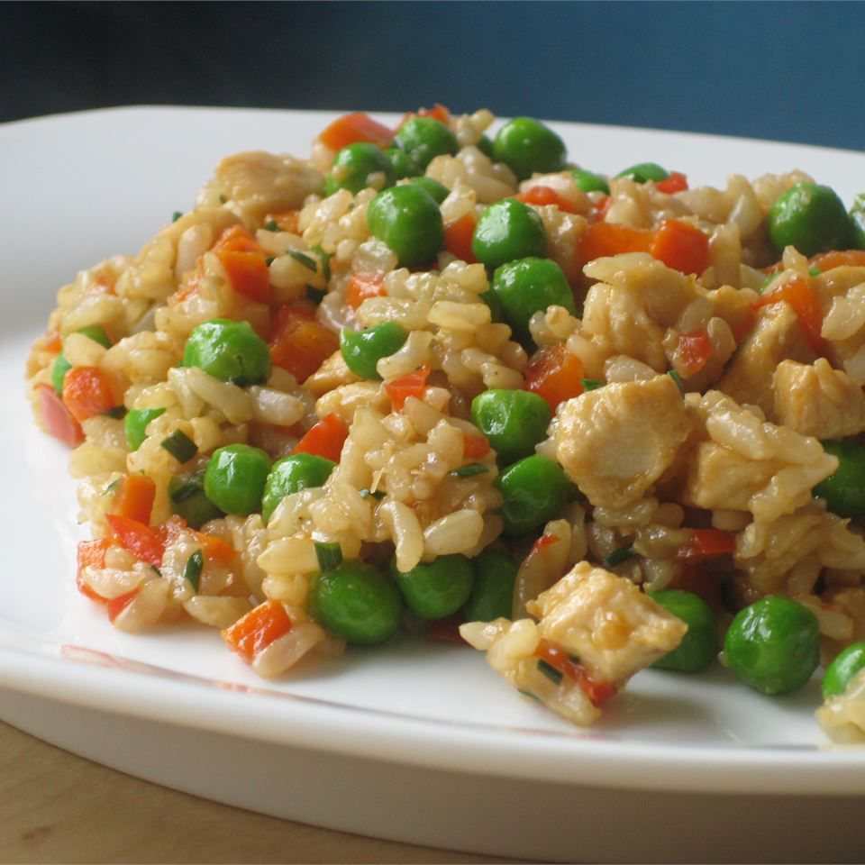

Garlic Chicken Fried Brown Rice

A recipe for Garlic Chicken Fried Brown Rice from allrecipes.com
This recipes will teach you how to make a delicious Garlic Chicken Fried Brown Rice
Ingredients
- 2 tablespoons vegetable oil, divided
- 8 ounces skinless, boneless chicken breast, cut into strips
- ½ red bell pepper, chopped
- ½ cup green onion, chopped
- 4 cloves garlic, minced
- 3 cups cooked brown rice
- 2 tablespoons light soy sauce
- 1 tablespoon rice vinegar
- 1 cup frozen peas, thawed
Steps
- Heat 1 tablespoon of vegetable oil in a large skillet set over medium heat. Add the chicken, bell pepper,
green onion and garlic. Cook and stir until the chicken is cooked through, about 5 minutes.
Remove the chicken to a plate and keep warm.
- Heat the remaining tablespoon of oil in the same skillet over medium-high heat. Add the rice; cook and stir to
heat through. Stir in the soy sauce, rice vinegar and peas, and continue to cook for 1 minute. Return the chicken
mixture to the skillet and stir to blend with the rice and heat through before serving.